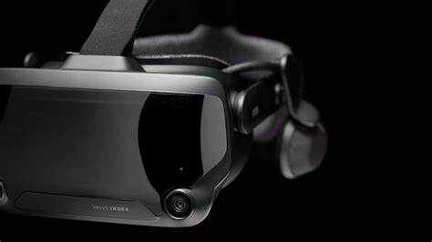
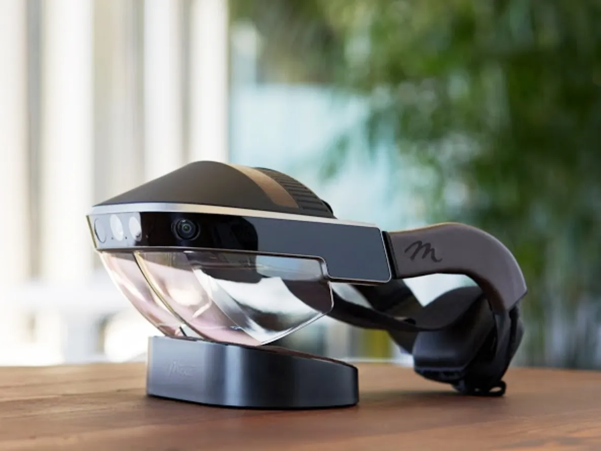
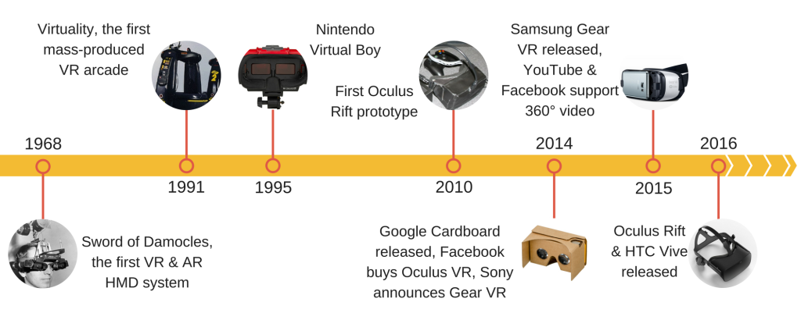
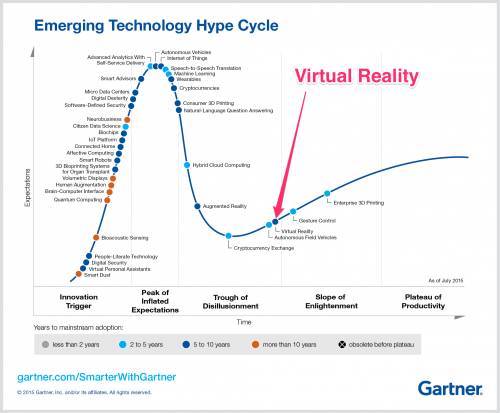

Everything about XR explained (so far)
Welcome!
Welcome to our website, your gateway to the fascinating world of XR (Extended Reality). Whether you're an enthusiast, a curious learner, or a business professional, we've got you covered with all the essential information about XR, VR (Virtual Reality), and AR (Augmented Reality).
Here is an introduction about our various Topics here on this Website:
What is XR?
If you've come across terms like XR, VR, and AR before, you might be curious about what they actually mean. Or perhaps you're already familiar with these terms but could use a quick refresher. Either way, you're in the right place.
The History of XR
Embark on a journey through the history of XR and discover its evolution from early experiments to cutting-edge technologies.
The Current XR market
Explore the current XR scene and discover the companies pushing the boundaries of innovation, while gaining insight into the challenges currently faced within the industry.
What is XR?
XR, which stands for "extended reality," is an umbrella term that encompasses various immersive technologies such as virtual reality (VR) and augmented reality (AR). These technologies aim to create realistic and interactive experiences by blending the physical and digital worlds.
VR
Virtual reality (VR) transports users to entirely virtual environments, blocking out the real world and immersing them in a computer-generated reality. Users wear a headset that tracks their movements and displays virtual images and sounds, allowing them to explore and interact with the virtual world.
AR
Augmented reality (AR) overlays digital information or virtual objects onto the real world. AR experiences are typically viewed through a smartphone or wearable device, which uses cameras and sensors to detect the surrounding environment. Users can see and interact with virtual elements that appear integrated into their real-world surroundings.
How to keep the two apart:
| VR | AR |
|---|---|
| Creates a virtual reality | Changes our percieved reality |
| Has no outside influence and has full immersion | Has outside influence by using our reality |
| Needs a headset | Only needs a device with a camera and screen |
The History of XR
1968: The Sword of Damocles - The birth of VR
The Sword of Damocles was the first ever VR headset. Despite its primitive nature and excessive weight requiring suspension from the ceiling, it laid the foundation for future advancements in VR headset components.
1991 Virtuality - The public's first taste of VR
Virtuality was the first three-dimensional VR arcade experience that hit the commercial markets. Featuring a magnetic tracking system and free-moving joysticks akin to modern designs, users could immerse themselves in a pod with a steering wheel or stand freely, resembling standalone headsets.
1995: The Nintendo Virtual Boy
The Nintendo Virtual Boy was a standalone VR headset that faced commercial failure due to high costs, monochrome display, and poor ergonomics. Health concerns surrounding children's usage, including potential lazy eye development and motion sickness, drew attention to the impact of VR experiences on children.
2010: The Birth of Oculus
Designed in a garage, the first prototype of the Oculus Rift boasted a high-speed IMU for rapid orientation and a 5.6-inch display. A few months later its creator launched a Kickstarter campaign, leading to significant success and leading to Oculus we know today.
2014: The Rise of VR
2014: The Rise of VR - The release of Google Cardboard introduced the public to modern day VR, offering their first taste of immersive experiences. Facebook's acquisition of Oculus and Sony's collaboration with Oculus to develop the Gear VR headset marked a pivotal year for VR.
2015: Gear VR Collaboration
Sony and Oculus teamed up to release Gear VR, which was similar to Google Cardboard because it utilized smartphones for its display. The headset also served as a controller, incorporating tracking and field of view features.
2016: The True VR Headsets Arrive:
The Oculus Rift and the HTC Vive were released. HTC being a new competitor to Oculus. These commercially available and user-friendly VR headsets propelled the trend into mainstream popularity.
The Current State of the XR industry
XR, despite its initial promises, hasn't brought about a complete revolution in the gaming industry or completely transformed our social interactions, movie and TV experiences, work environments, or any of the other exaggerated predictions that emerged when XR first attempted to gain mainstream popularity in the early-to-mid 2010s.
As is often the case with hyped technologies, the actual outcomes fell short of expectations, virtual or otherwise. Realistically, it may take another decade before XR becomes both affordable and convenient enough to achieve widespread adoption, moving beyond its current position as a niche interest.
Public Perception:
The accompanying image depicts a Gartner hype cycle graph illustrating the current public perception of VR. According to the graph, VR is currently transitioning out of the Trough of Disillusionment phase. This indicates that the public perception of VR is becoming more positive, and it is expected that investor confidence will also increase. This positive shift in perception ensures the longevity of XR (Extended Reality) and suggests that it will experience significant growth in the coming years.
The Economic Evidence:
As of recently, there have been big signs that the current industry seems to be slowing down. Facebook and Microsoft have already laid thousands of employees, some companies have delayed their new product launches and multiple investors have been pulling out of XR companies.
Nevertheless, XR continues to maintain a strong presence and shows no signs of fading away. Industry giants like Facebook, Sony, and Valve have made substantial investments, totaling billions of dollars, in the XR industry. Due to this, these companies are too invested in XR to pull out, ensuring that we can expect further advancements and developments in the near future.
Products
From affordable body tracking solutions to bespoke VR headsets, the XR landscape is brimming with innovation. Here are just a few of the pioneering companies that are actively shaping the future in this exciting field:
1. Mocopi a Cheap Motion-Tracking Solution
Mocopi, a cost-effective motion-tracking solution developed by Sony, addresses the challenges posed by expensive current motion-trackers that rely on Base Stations. Base Stations are external sensors necessary for tracking motion and are both costly and inconvenient to setup up. Mocopi tackles this issue by utilizing internal sensors, eliminating the need for Base Stations and significantly reducing the overall cost of motion-tracking. With Mocopi's internal sensor technology, motion-tracking becomes more accessible and affordable for users.
2. The Beyond Headset a Tailor-Made Headset
Bigscreen VR's innovative creation, the Beyond Headset, offers a customized solution to address the challenges of finding the perfect fit for IPD (interpupillary distance) and face cushion in traditional headsets. IPD refers to the distance between one's eyes, and finding the optimal IPD is crucial for enhancing image quality and overall comfort during VR experiences. With the Beyond Headset, users can utilize the Bigscreen app on their smartphones to scan their faces. Based on this scan, Bigscreen VR then crafts a personalized and custom-tailored headset, ensuring an ideal fit and superior user experience.
3. Katwalk an Omnidirectional Treadmill
KatWalk introduces a ground-breaking concept as the first affordable and universally compatible Omnidirectional treadmill designed for VR experiences. This innovative solution enables users to navigate virtual environments by walking in any direction. Rather than a traditional treadmill, KatWalk utilizes specialized shoes that glide smoothly across its surface. Not only is it user-friendly, but it also boasts a remarkably straightforward setup process, requiring only a few tools and approximately 30 to 45 minutes to assemble. Furthermore, its adjustable height feature ensures compatibility with a wide range of user sizes. KatWalk redefines the possibilities of immersive VR locomotion, offering convenience and versatility to enhance the virtual experience for users of all backgrounds.